- Уверенно объяснить, что такое статистический критерий и как он работает
- Применить команды R для проверки наиболее распространенных типов гипотез
- Понять что такое пермутационный метод тестирования гипотез
- Написать R код, позволяющий реализовать пермутационный метод
Вы сможете
ЧАСТЬ 1. Основы основ
- Нормальное распределение величин
- Параметры распределения
- Выборочные оценки параметров распределения
Нормальное распределение
Распределение - это функция, описывающая связь между значениями величины и вероятностью ее встречи в генеральной совокупности
Нормальное распределение придумал немецкий математик Карл Гаусс
\[p= \frac {1}{\sigma \sqrt{2 \pi}} e^{-\frac{(x-\mu)^2}{2\sigma^2}}\]
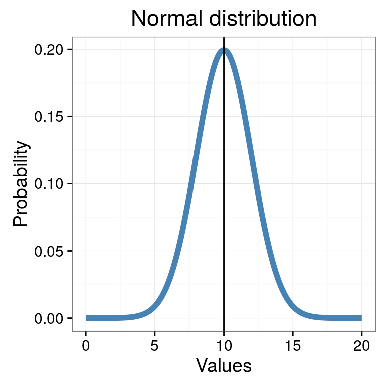

Гаусс
Параметры нормального распределения
\[p= \frac {1}{\sigma \sqrt{2 \pi}} e^{-\frac{(x-\mu)^2}{2\sigma^2}}\]
Как и любая функция, функция, описывающая нормальное распределение, имеет параметры
Два параметра нормального распределения:
- \(\mu\) - Ожидаемое значение случайной величины (среднее значение, которое получится после большого числа выборок из генеральной совокупности)
- \(\sigma\) - Характеризует разброс значений в генеральной совокупности. (\(\sigma^2\) - дисперсия)
Мы обычно работаем с выборками из генеральной совокупности
Давайте для наших экспериментов создадим генеральную совокупность с параметрами \(\mu = 50\) и \(\sigma = 7\).
Вот график ее частотного распределения в генеральной совокупности.
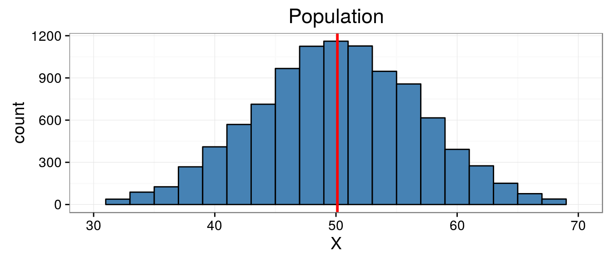
Возьмем выборку из этой генеральной совокупности
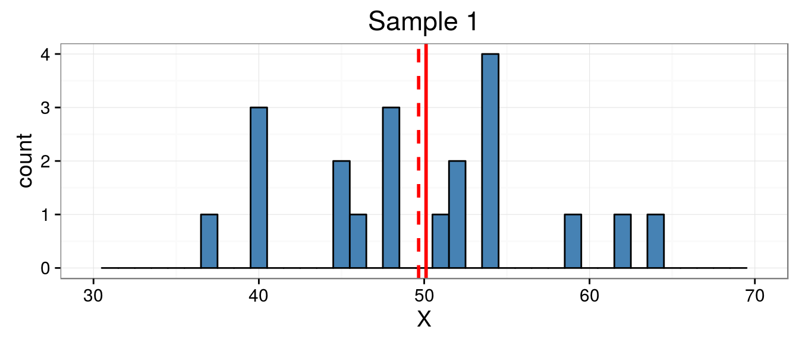
Оценкой параметра \(\mu\) является среднеее значение в выборке
\[\bar{x}=\frac{\sum{x_i}}{n}\]
Оценкой параметра \(\sigma\) является среднеквадратичное отклонение
\[SD=\sqrt{\frac{\sum{(x_i - \bar{x})^2}}{n-1}}\]
В разных выборках средние значения будут отличаться.
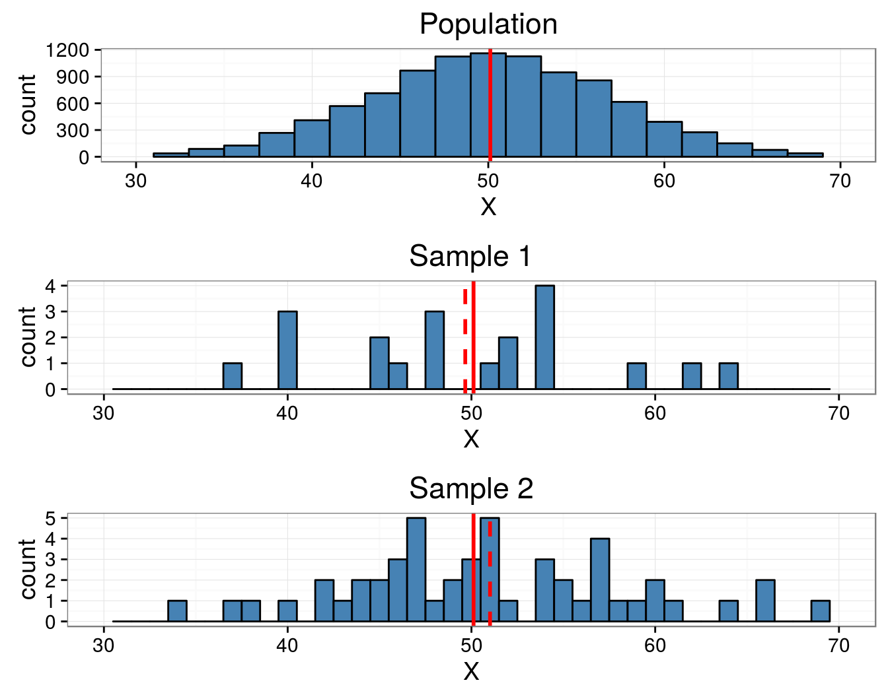
А что будет со средними, если взять много-много выборок?
Давайте возьмем много-много выборок, вычислим для каждой выборочное среднее и построим распределение этих выборочных средних.
Выборочные средние нормально распределены с параметрами \(\mu\) и \(SD _\bar{x}\)
Среднее значение выборочных средних стремится к среднему в генеральной совокупности
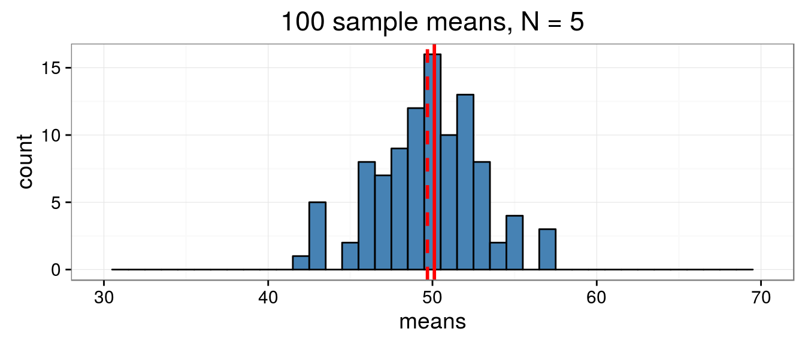
Чем больше объем выборок, тем точнее оценка среднего в генеральной совокупности
\[SE _\bar{x} = \sigma / \sqrt{N}\]
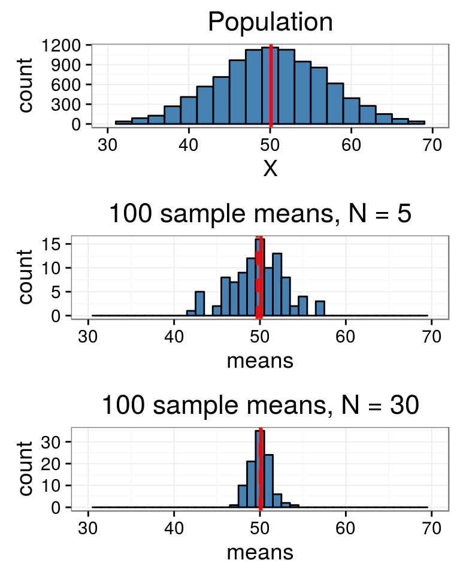
Cтандартная ошибка среднего (= стандартное отклонение выборочного распределения среднего) будет в N раз меньше, чем дисперсия в генеральной совокупности
То есть, чем больше будет объем выборок, тем меньше будет эта стандартная ошибка, и тем точнее мы оценим среднее в генеральной совокупности.
Теорема центрального предела (ТЦП)
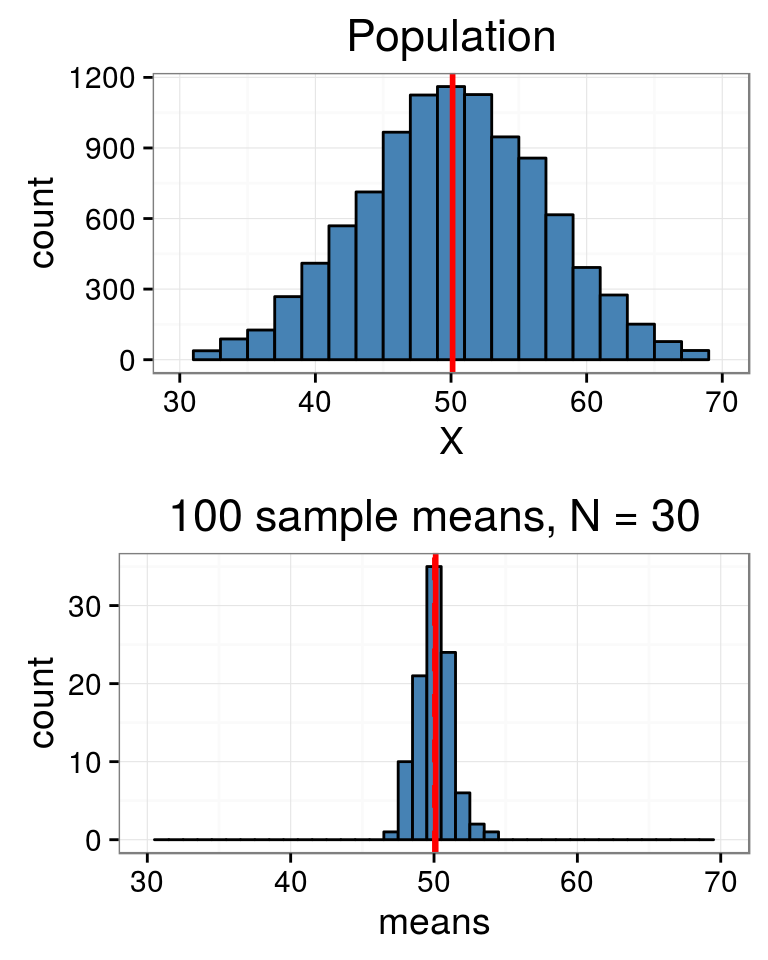
ТЦП в неформальном пересказе:
Распределение выборочных средних приближается к нормальному при условии, что объемы выборок достаточно велики, а распределение в генеральной совокупности не слишком асимметрично
ТЦП выполняется и для других исходных распределений, помимо нормального.
Применение ТЦП: - доверительные интервалы - статистические тесты
Давайте научимся стандартизировать нормальное распределение
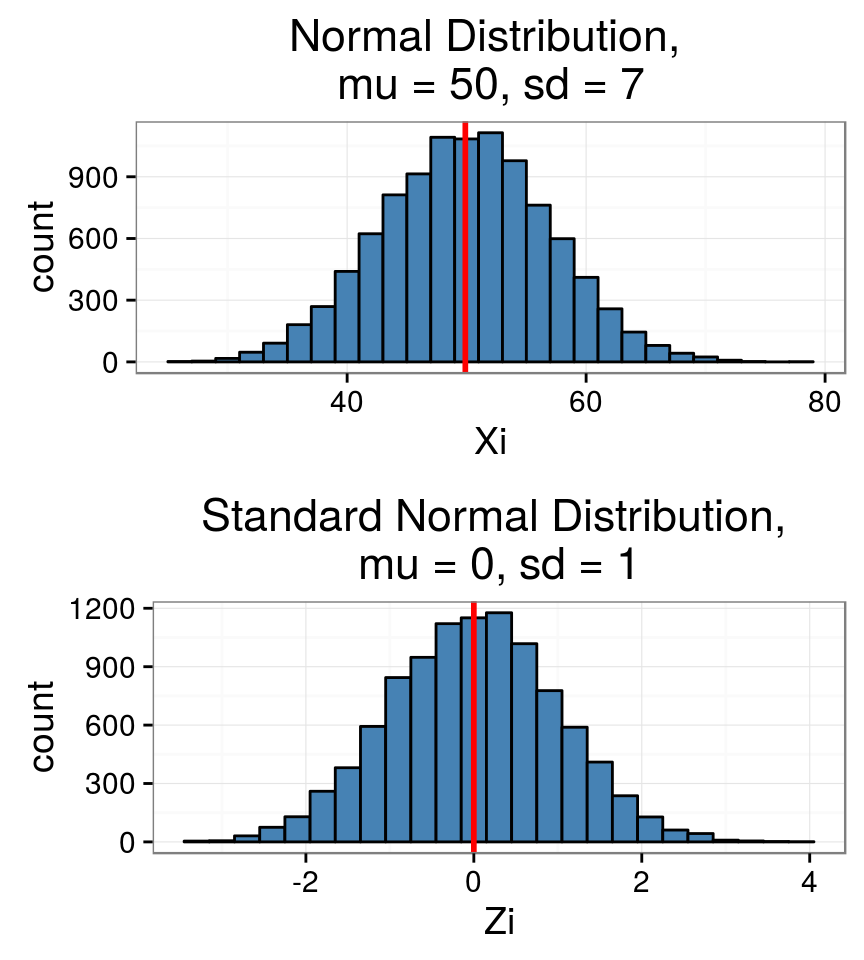
Стандартное нормальное распределение можно получить после стандартизации
\[z_i=\frac{x_i - \bar{x}}{SE}\]
После стандартизации всегда:
среднее \(\mu = 0\)
стандартное отклонение \(\sigma = 1\)
Для стандартного нормального распределения легко можно посчитать вероятность получения определенных значений (площадь под кривой)
И вот, наконец…
t-распеделение Стьюдента (Student, 1908)
\[t=\frac{d}{SE_d}\]

William Sealy Gosset
t Стьюдента (Student, 1908)
\[t=\frac{d}{SE_d}\]
\(d=\bar{x_1} - \bar{x_2}\) - это разность между двумя средними значениями
\(SE_d\) - Общее среднеквадратичное отклонение разности двух средних
\[SE_d = \sqrt{\frac{sd_1^2(n_1-1) +sd_2^2(n_2-1)}{n_1+n_2-2}(\frac{1}{n_1} + \frac{1}{n_2})}\]
Если \(n_1 = n_2\), то формула существенно упрощается
\[SE_d = \sqrt{\frac {sd_1^2} {n_1} + \frac {sd_2^2} {n_2}}\]
t-распределение
Таким образом, t-распределение это всего лишь стандартизованное распределение разностей двух средних значений из одной генеральной совокупности!
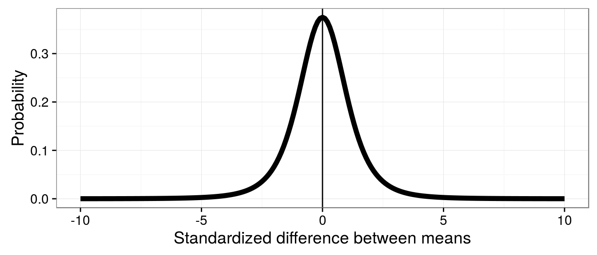
Форма этого распределения зависит только от одного параметра
\[df = n_1 + n_2 - 2\]
Мы можем оценить вероятность получить разницу между средними определенного размера
Задача
Если мы берем из одной генеральной совокупности две выборки по \(n_1 = n_2 = 10\), то с какой вероятностью стандартизированная разность между ними окажется больше 2 (или меньше -2)?
Т.е.
\[ \frac {\bar{x _1} - \bar{x _2}} {\sqrt{\frac {sd _1^2} {n _1} + \frac {sd _2^2} {n _2}}} > 2\]
или
\[ \frac {\bar{x _1} - \bar{x _2}} {\sqrt{\frac {sd _1^2} {n _1} + \frac{sd _2^2} {n _2}}} < -2\]
Эту вероятность можно вычислить строго, но мы попробуем сделать это вручную
Для того, чтобы "пощупать руками" суть критерия, давайте смоделируем процесс взятия парных выборок из одной генеральной совокупности.
То есть представим себе, что мы много раз (например, 1000) взяли пары выборок из одной и той же генеральной совокупности.
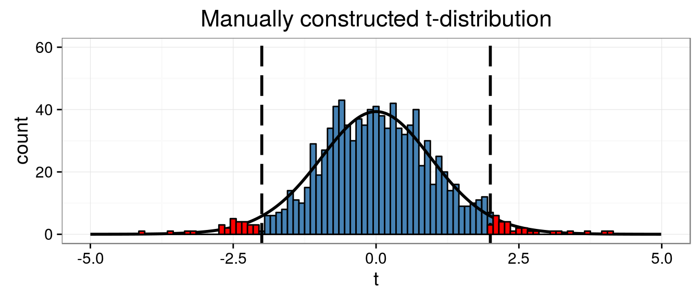
Для оценки интересующей нас вероятности, нам надо понять сколько раз из 1000 мы встретим величину больше 2 (или меньше -2)
Доля значений \(t > 2\) или \(t < -2\) для распределения t, полученного вручную будет 0.058
Для строгой оценки этой вероятности оценивают долю площади под кривой, описывающей распределение (кривая плотности вероятности).
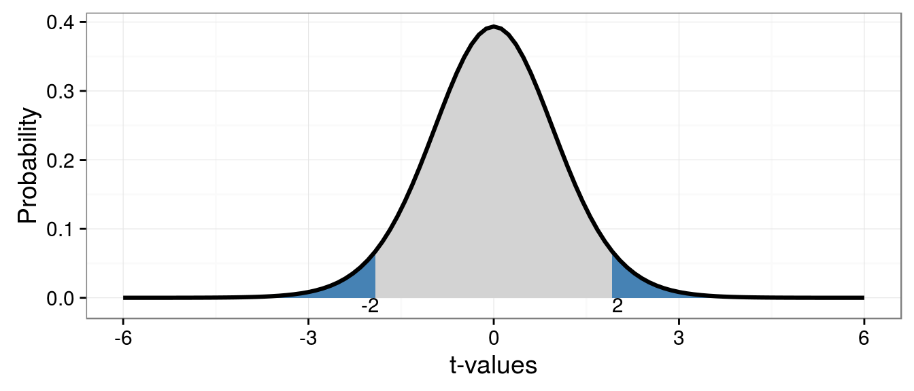
Для заданной границы \(t>2\) (\(t<-2\)) это будет отношение закрашенной площади под кривой к общей площади
Но можно поставить вопрос иначе
Где находится значение t, которое отделяет 95% площади под кривой?
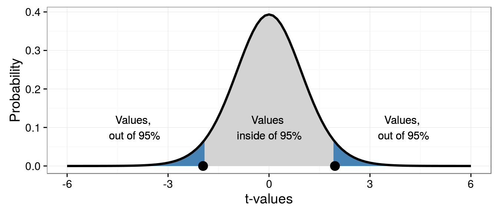
Значения t, которые входят в область 95% - с высокой вероятностью (95%) можно получить, если выборки из одной генеральной совокупности.
Значения t, которые не попадают в область 95% - маловероятно получить, если выборки из одной генеральной совокупности (5%).
Но можно поставить вопрос иначе
Где находится значение t, которое отделяет 95% площади под кривой?
Иными словами, если \(t > t _{crit}\), то вероятность получить такую стандартизированную разницу средних двух выборок из одной совокупности очень низка (\(p < 0.05\)).
- Теперь у на есть инструмент для проверки статистических гипотез - статистический критерий, или статистический тест
ЧАСТЬ 2. Тестирование статистических гипотез
- Формулировка биологической гипотезы
- Численное выражение биологической гипотезы (\(H\))
- Формулировка антигипотезы (\(H_0\) - нулевой гипотезы)
- Тестирование нулевой гипотезы

(Underwood, 1997)
Простейший пример тестирования гипотезы
Создадим две выборки из популяций с нормальным распределением величин и заведомо отличающимися значениями \(\mu\)
# Зерно для генератора случайных чисел для сопоставимости результатов
set.seed(456)
# Создаем две выборки по 100 из нормального распределения с разными параметрами
male <- rnorm(n = 100, mean = 130, sd = 5)
female <- rnorm(n = 100, mean = 129, sd = 5)
gender <- c(rep("M", 100), rep("F", 100))
# Сохраняем выборки в датафрейме для удобства
df_height <- data.frame(gender = factor(gender),
height = c(male, female))
Давайте построим частотные распределения этих двух выборок
Здесь обе выборки пока еще смешаны. Давайте разберемся на примере этого неправильного графика, как устроены графики пакета ggplot
library(ggplot2) ggplot(df_height, aes(x = height)) + geom_histogram(binwidth = 5, colour = "grey40")
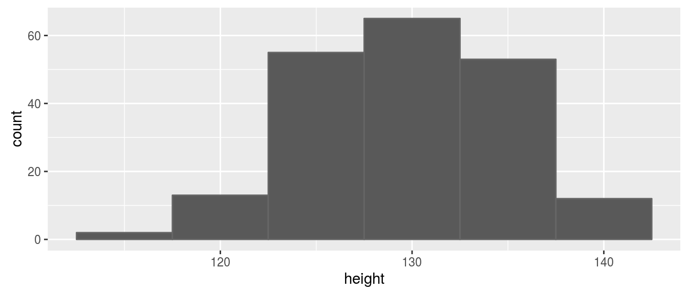
Элементы графика ggplot
ggplot(df_height, aes(x = height)) + geom_histogram(binwidth = 5, colour = "grey40")
ggplot()- создаем график и добавляем к нему графические слои - геомыgeom_histogram()- геом, который создает гистограммыaes()- функция управляет "эстетиками" - тем, как именно переменные отображаются в виде графических параметров. Может находится внутриggplot(), а может внутри любого геома.
Примеры эстетик:
x- переменная, которая будет по оси Хcolour- цвет контураfill- цвет заливки
Изменим ширину интервалов гистограммы
ggplot(df_height, aes(x = height)) + geom_histogram(binwidth = 2, colour = "grey40")
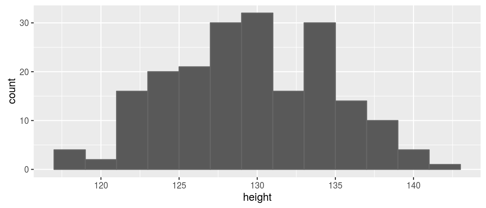
Изменим оформление (тему) графика
# # На один раз # ggplot(df_height, aes(x = height)) + # geom_histogram(binwidth = 2, colour = "grey40") + # theme_classic() # # Или до конца сессии theme_set(theme_bw()) ggplot(df_height, aes(x = height)) + geom_histogram(binwidth = 2, colour = "grey40")
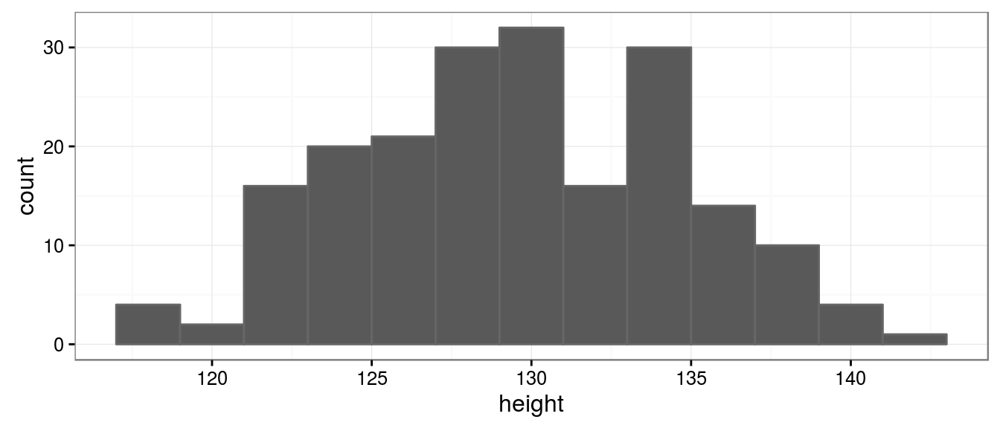
Разделим гистограммы по переменной gender при помощи цвета
ggplot(df_height, aes(x = height, fill = gender)) + geom_histogram(binwidth = 3, colour = "grey40", position = "dodge")
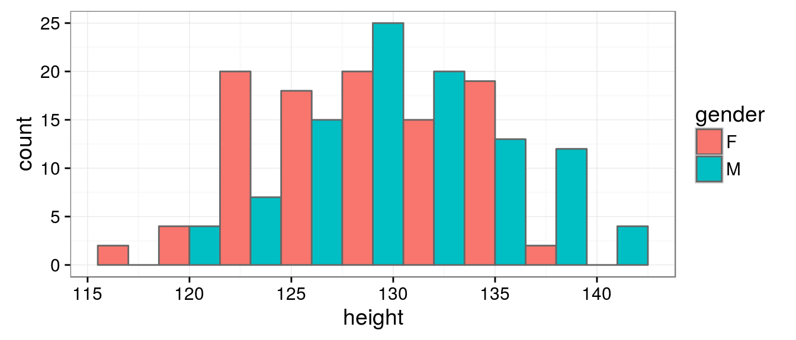
При помощи логических векторов посчитаем средние по переменной gender
Логические операторы:
==- проверка равенства!- отрицание&- И|- ИЛИ
f_male <- df_height$gender == "M" f_female <- !f_male mean_m <- mean(df_height$height[f_male]) mean_f <- mean(df_height$height[f_female])
Добавим линии, обозначающие средние значения
Графики ggplot можно сохранять в переменных и потом достраивать
gg_height <- ggplot(df_height, aes(x = height, fill = gender)) + geom_histogram(binwidth = 3, colour = "grey40", position = "dodge") + geom_vline(aes(xintercept = mean_f), colour = "red", size = 1) + geom_vline(aes(xintercept = mean_m), colour = "blue", size = 1, linetype = "dashed") gg_height

Добавим подписи осей и заголовок
Частотное распределение этих двух выборок выглядит так
gg_height +
labs(x = "Height (cm)",
y = "Count",
title ="Height distribution",
fill = "Gender")
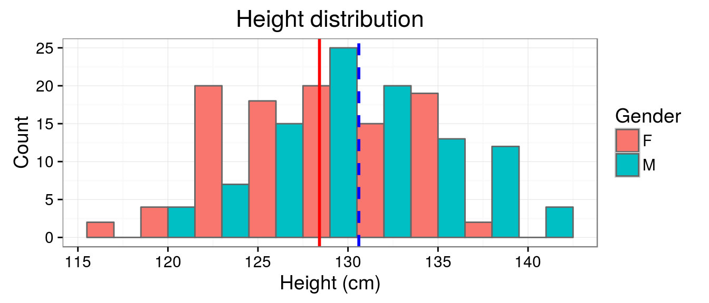
Сравним две выборки с помощью t-критерия Стьюдента
t_height <- t.test(height ~ gender, data = df_height) t_height
## ## Welch Two Sample t-test ## ## data: height by gender ## t = -3, df = 200, p-value = 0.002 ## alternative hypothesis: true difference in means is not equal to 0 ## 95 percent confidence interval: ## -3.562 -0.811 ## sample estimates: ## mean in group F mean in group M ## 128 131
Вопрос: Вероятность какого события отражает уровень значимости p=0.002?
Уровень значимости p=0.002
Это вероятность получения из одной совокупности (\(H_0\) верна) двух выборок с такими, как мы получили, выборочными оценками среднего и среднеквадратичного отклонения.
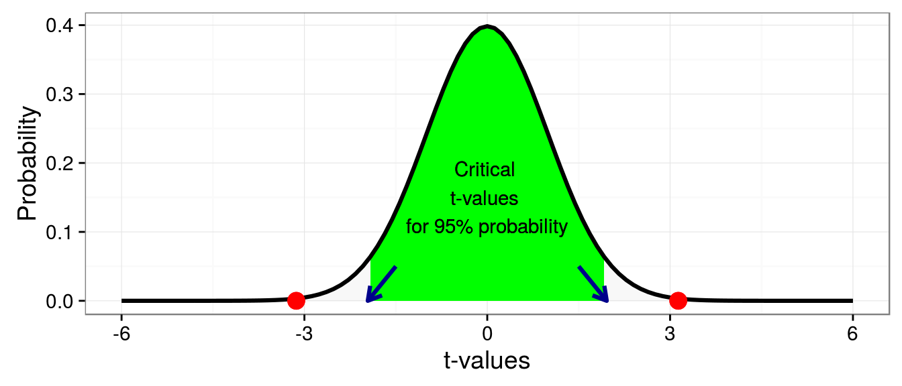
Полученное нами эмпирическое значение t = -3.134 не попадает в область, ограниченную критическими значениями!
Это значит, что ошибочный вывод о существовании различий мы будем делать не более, чем в 5% случаев, если подобный эксперимент будет проводиться многократно. И это нас устраивает, поскольку мы приняли \(\alpha=0.05\).
Допущения (Assumptions) t-критерия
- Независимость выборок друг от друга
- Нормальное распределение сравниваемых величин
- Равенство дисперсий (выход - модификация Велча)
Почему в полученных результатах нашего теста df=197.82 дробное число?
R автоматичски вводит поправку на разность дисперсий (используется модифицированная версия теста - Welch-test)
В этом тесте специально занижается df, что делает китерий более консервативным (то есть он реже отвергает \(H_0\), находит меньше ложных различий)
\[df=\frac {(\frac {sd _1} {\sqrt {n _1}} + \frac {sd _2} {\sqrt {n _2}})} { \frac {(sd_1 / \sqrt{n_1})^2} {(n _1 + 1)} + \frac {(sd _2 / \sqrt {n _2})^2} {(n_2+1)}} - 2\]
Двусторонние и односторнние тесты
Двусторонний тест
\(H_0: \mu_1-\mu_2=0\); \(H_a: \mu_1\ne\mu_2\)
т.е. м.б. \(\mu_1 > \mu_2\) и \(\mu_1 < \mu_2\)
Односторонний тест
\(H_0: \mu_1-\mu_2=0\); \(H_a: \mu_2 > \mu_1\)
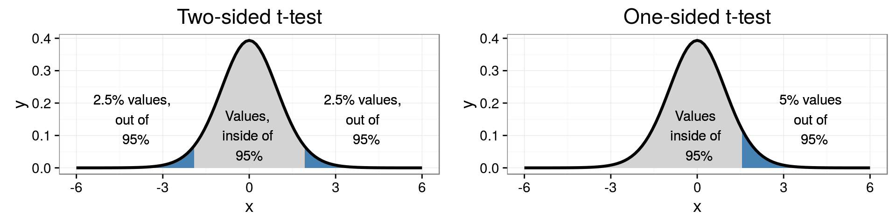
Отвержение \(H_0\) происходит при меньшем значении t. В случае с t-критерием будьте осторожны! Используя односторонние тесты, мы повышаем вероятность неправильного отвержения \(H_0\).
Порядок применения t-критерия для сравнения выборок
- Принимаем априорный пороговый уровень значимости, например \(\alpha = 0.05\)
- Для выборок вычисляем средние и среднеквадратичное отклонение
- Вычисляем эмпирическое значение t
- Находим число степеней свободы для данного t:
- Если дисперсии равны, то \(df = n _1 + n _2 - 2\)
- Если дисперсии не равны, \(df = \frac {(sd _1 / \sqrt{n _1} + sd _2 / \sqrt{n _2})} {(sd _1 / \sqrt {n _1})^2 / (n _1 + 1) + (sd _2 / \sqrt {n _2})^2/(n _2 + 1)} - 2\)
- Строим референсное t-распределение для даного \(df\) при истинной \(H_0\)
- Вычисляем величину уровня значимсти \(p\)
Пункты 3-6 за нас может сделать функцияt.test()
- Если \(p < \alpha\), отвергаем \(H _0\), наблюдаются достоверные различия между средними
- Если \(p > \alpha\), сохраняем \(H_a\), достоверных различий не выявляется
ЧАСТЬ 3. Пермутационный метод тестирования гипотез
Пермутации - это перестановки.
Если две сравниваемые выборки взяты из одной совокупности, то обмен элементами между ними ничего не изменит. Степень различия между выборками (значение статистики) должно остаться более или менее тем же самым.
Применяем пермутационный метод
Сравним при помощи пермутаций две выборки, описывающие рост мальчиков и девочек (male и female)
head(male)
## [1] 123 133 134 123 126 128
head(female)
## [1] 130 133 129 129 121 135
Введем статистику
\[d = |\bar{x_1} -\bar{x_2}|\]
d_initial <- abs(mean(male) - mean(female))
При сравнении векторов male и female d = 2.186
head(male)
## [1] 123 133 134 123 126 128
head(female)
## [1] 130 133 129 129 121 135
При пермутациях мы должны поменять местами, например,
male[3] = 134 \(\longleftrightarrow\) female[5] = 120.6.
А еще лучше поменять случайное количество элементов одной выборки на такое же количество элементов из другой выборки.
Получаем распределение статистики \(d_{perm}\)
Для этого мы много раз случайно перемешиваем выборки и после каждой пермутации вычисляем значение статстики \(d_{perm}\)
Nperm <- 10000 # число пермутаций
dperm <- rep(NA, Nperm) # пустой вектор для результатов
set.seed(76) # зерно для генератора случайных чисел
for (i in 1:(Nperm - 1)) # Повторяем 9999 раз
{
BOX <- c(male, female) # смешиваем наши вектора
ord <- sample(x = 1:200, size = 200) # задаем новый порядок значений
f <- BOX[ord[1:100]] # первые 100 перемешанных значений
m <- BOX [ord[101:200]] # следующие 100 перемешанных значений
dperm[i] = abs(mean(m) - mean(f)) # считаем пермутационную статистику
}
head(dperm)
## [1] 0.390 0.323 0.404 0.261 0.770 1.093
Получаем распределение статистики \(d_{perm}\)
Посмотрим в конец этого вектора
tail(dperm)
## [1] 0.1022 0.1233 0.7545 0.0854 0.7536 NA
Последнее 10000-е значение не заполнено!
В него надо вписать исходное, полученное до пермутаций, значение d = 2.186.
Это необходимо, так как мы тестируем гипотезу о принадлежности этого значения случаному распределению.
dperm[Nperm] <- d_initial
Для удобства, положим данные в датафрейм и отметим значения d < d_initial
df_perm <- data.frame(d_p = dperm) df_perm$less <- df_perm$d_p < d_initial
Получаем распределение статистики \(d_{perm}\)
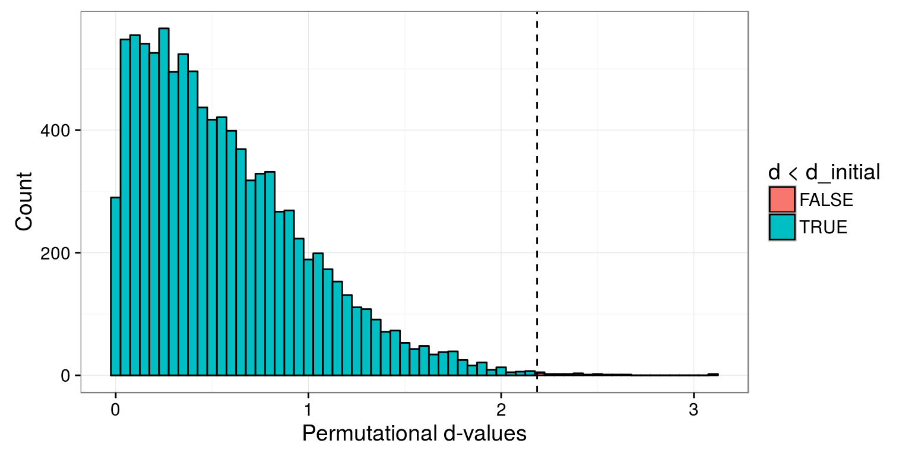
Постройте такой график самостоятельно
Решение
dperm_pl <- ggplot(df_perm, aes(x = d_p, fill = less)) +
geom_histogram (binwidth = 0.05, colour = "black") +
geom_vline(aes(xintercept = d_initial), linetype = 2) +
labs(x = "Permutational d-values", y = "Count",
fill = "d < d_initial")
dperm_pl
Расчитаем величину уровня значимости
\[p_{perm}= \frac{N _{d _{perm} >= d}}{N _{perm}}\]
p_perm <- length(dperm[dperm >= d_initial] ) / Nperm
Итак, мы получили уровень значимости \(p_{perm}\) = 0.002
Сравним его с уровнем значимоcти, вычисленным с помощью параметрического t-критерия p=0.002
Они оба близки и оба выявляют достоверные различия
Take home messages
- Любой статистический критерий работает принципиально так же, как t-критерий: вычисляется значение тестовой статистики, которое сравнивается с референсным
распределением, получающимся при истинности \(H _0\) - У любого статистического критерия есть свои условия примнимости (assumptions)
Дополнительные источники
- Гланц С. Медико-биологическая статистика. М: Практика, 1998. 459 с.